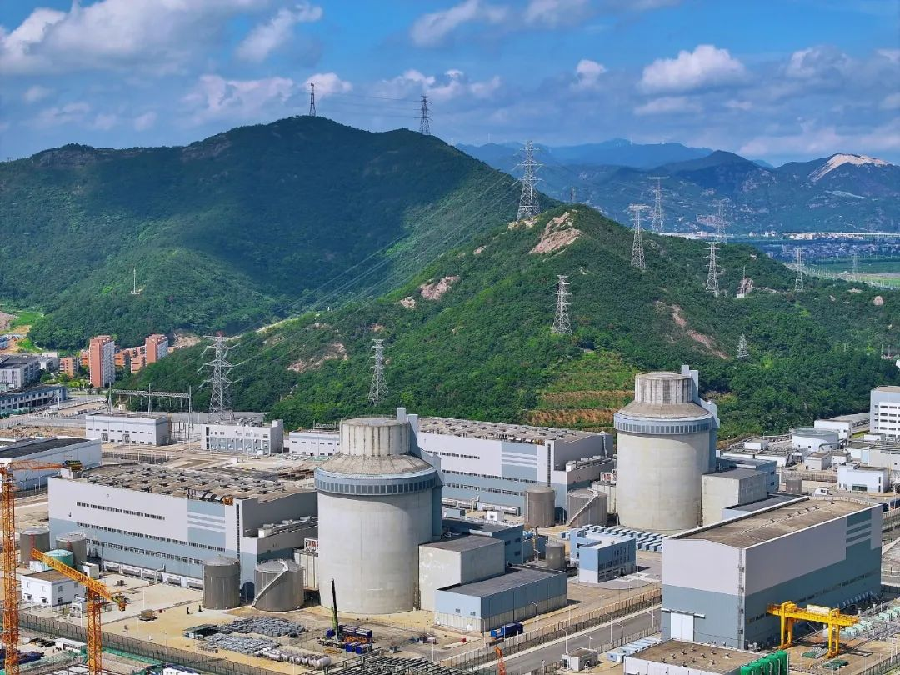

地理位置
中国浙江省台州市三门县
核电厂历史
2004年7月，位于浙江省台州市的三门核电站一期工程建设获得国务院批准。这是继中国第一座自行设计、建造的核电站——秦山核电站之后，获准在浙江省境内建设的第二座核电站。 三门核电站总占地面积740万平方米，可分别安装6台125万千瓦核电机组（AP1000）。其1号机组于2009年率先开工建设，并在2018年6月29日并网成功，正式投入运行。
堆形与数量
截止2024年11月，三门核电厂一期工程拥有两台百万千瓦级AP1000压水堆核电机组以及2台在建压水堆机组。
发电基本原理
三门核电厂采用压水堆核电机组，以下是简要介绍：
压水堆（Pressurized Water Reactor）是采用高压水来冷却核燃料的一种反应堆，其工作原理为：主泵将120～160个大气压的一回路冷却水送入堆芯，把核燃料放出的热能带出堆芯，而后进入蒸汽发生器， 通过传热管把热量传给二回路水，使其沸腾并产生蒸汽，常在一回路水中加入硼酸，用以控制反应性的慢变化。之后，二回路产生的高压蒸汽会推动汽轮机发电，再经过冷凝器和预热器进入蒸汽发生器，完成二回路水循环。 压水堆的工作原理图如下所示：

图1：压水堆示意图
荣誉与贡献
三门核电厂是中国核电自主化的重要依托项目，也是全球首个采用第三代非能动安全系统压水堆技术（AP1000）的核电站，标志着中国在核电技术领域迈向国际领先水平。三门核电厂 在建设过程中创造了多项世界纪录，比如成功吊装了全球最大的核电结构模块CA20，模块总重749吨，具备乏燃料贮存、传输、热交换及废物收集等功能。除此之外，三门核电厂率先采用模块化施工技术，将119个结构模块和65个设备 模块提前制造后运至现场拼装，大幅提升了施工效率，成为核电站建设领域的技术典范。作为清洁能源的重要提供者，三门核电厂每年可减少约500万吨优质动力煤运输量，以及1.149万吨二氧化硫和1.909万吨氮氧化物的排放， 为改善环境和推动绿色低碳发展作出了卓越贡献。三门核电厂不仅满足了浙江新增电力需求，还带动相关产业快速发展，展现了核电技术对经济社会发展的巨大推动力。
图3：三门核电厂全景
三门核电厂采用的是什么核电技术？
参考文献
1. 俞冀阳.核工程基本原理.北京：清华大学出版社，2018
2. 俞冀阳.核电厂系统与运行.北京：清华大学出版社，2016
3. 2024年中国核电行业研究报告，2024
4. 中国科学院上海应用物理研究所.浅谈沸水堆与压水堆，2011
5. AP1000反应堆压力容器的制造难点与监造应对措施
6. 国家核安全局网站